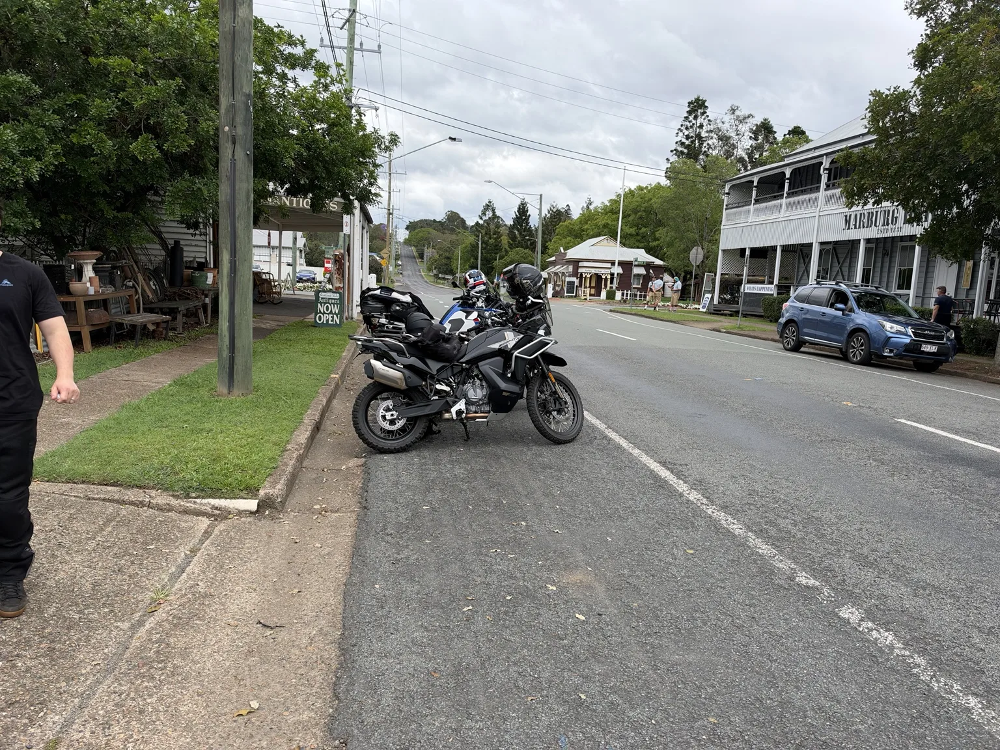
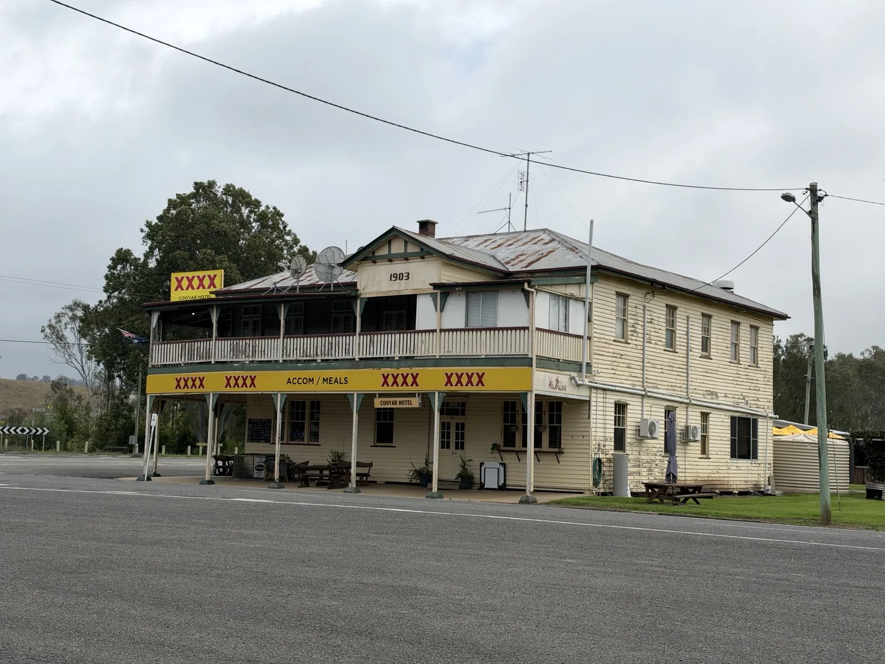
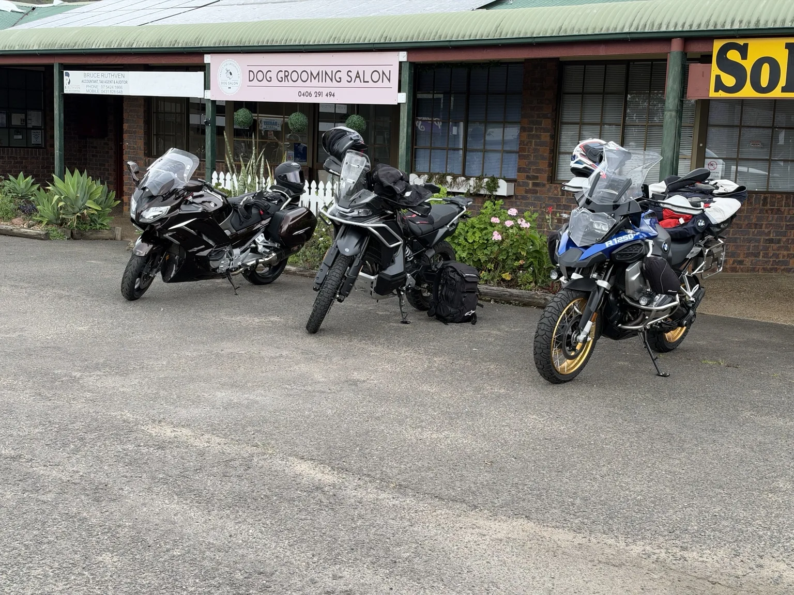
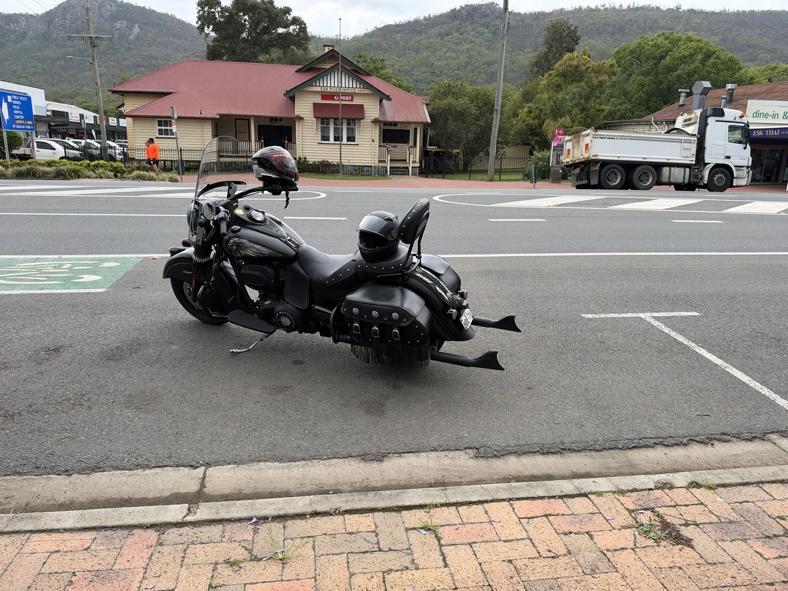
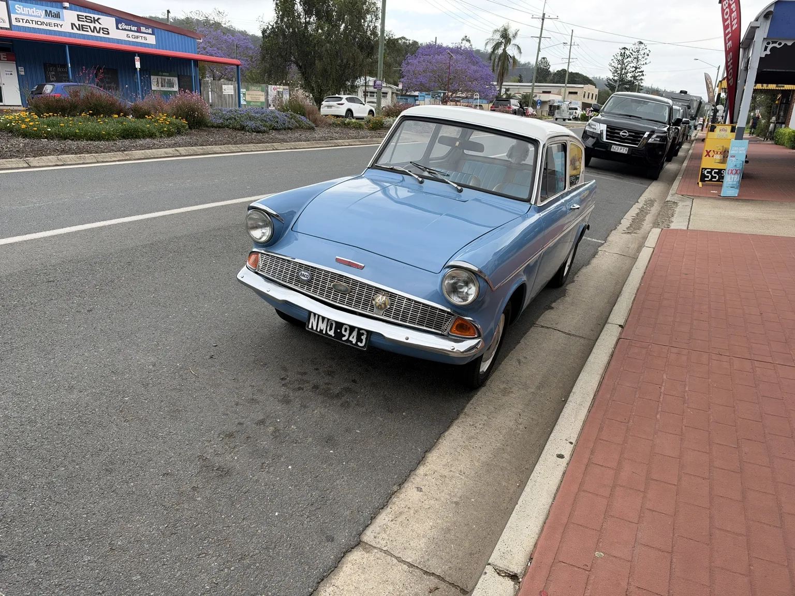
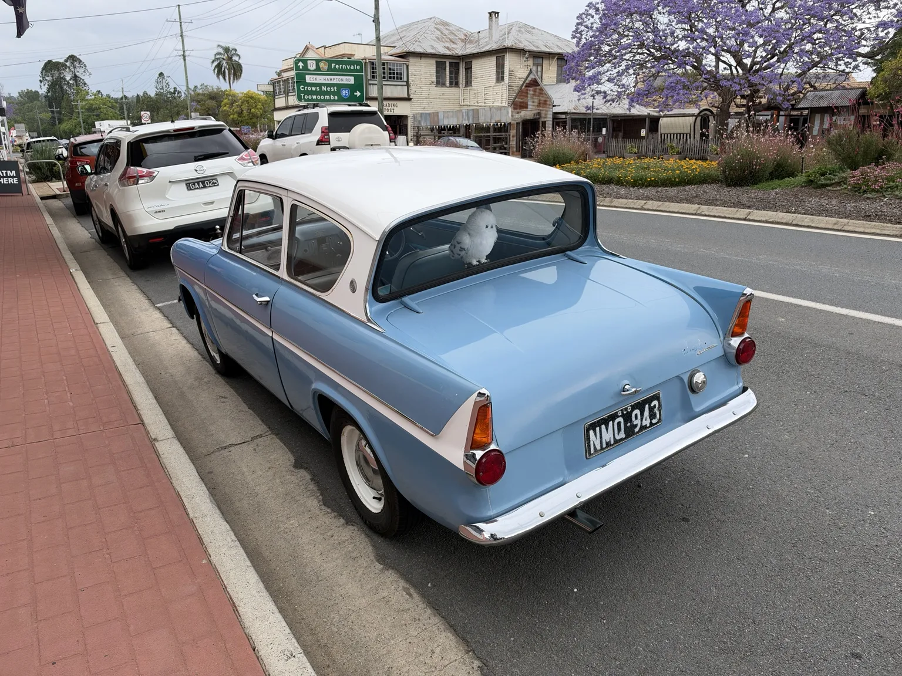

Ridden · 31 October – 1 November 2026
Dalby Halloween Ride
Wellington Point → Dalby → Blackbutt → Esk → home
It drizzled for much of Saturday, but we mostly stuck to the planned route to Dalby. On Sunday we rode home via Blackbutt and Esk, weaving between storms after Esk. We managed to stay fairly dry. The roads were wet the whole way, though, and the bikes were filthy by the time we got home.
Photos from the ride
Tap a photo to enlarge it. Use the arrows to browse, or Escape to close.











